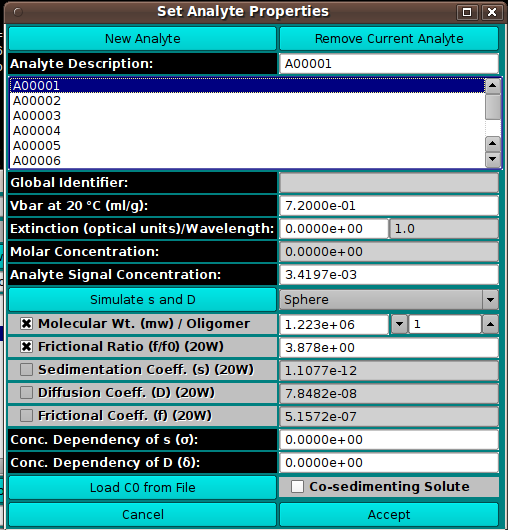

Model Components:
In this dialog, you can set the properties of components of a model.

Dialog Items:
- New Analyte Click to create a new analyte and add it to
the list of model components, using an
Analyte Management dialog.
- Remove Current Analyte Click to remove from the list of
model components the analyte currently selected.
- Analyte Description: Enter in the text box the name to be
given a newly created analyte or the new name to be given to a
currently selected analyte.
- (Analyte List) Click on the name of an analyte to select it for
editing of its properties.
- Global Identifier Read-only global identifier of the
analyte.
- Vbar at 20 °C (ml/g): Enter the vbar value at 20 degrees
centigrade.
- Extinction (optical units)/Wavelength: Enter the extinction
value for the read-only-displayed wavelength.
- Molar Concentration: Read-only molar concentration
calculated from Extinction and Signal Concentration.
- Analyte Signal Concentration: Enter the analyte's signal
concentration value.
- Simulate s and D Bring up a
Shape dialog that uses axial ratio to model
s, D, and f from MW for 4 basic shapes.
- (Shape) Select molecule shape: Sphere, Prolate Ellipsoid,
Oblate Ellipsoid, or Rod. The selection here should be made before any
use of the Shape dialog.
- (Parameters/Coefficients) Exactly 2 of the 5 component
parameters to follow should be checked and their values possibly
modified. If a different pair than currently checked is desired, you
must first uncheck one of the boxes to enable selection of an
alternate. Values for unchecked parameters are calculated from the
two selected.
- Molecular Wt. (mw) / Oligomer: Check Molecular Weight to
enable setting a value for it in the text box. For a polygomer
component, set the Oligomer value greater than 1.
- Frictional Ratio (f/f0) (20W) Select frictional ratio and
set a value for it.
- Sedimentation Coeff. (s) (20W) Select sedimentation
coefficient and set a value for it.
- Diffusion Coeff. (D) (20W) Select diffusion
coefficient and set a value for it.
- Frictional Coeff. (f) (20W) Select frictional
coefficient and set a value for it.
- Conc. Dependency of s (σ): Set a non-zero value to
specify concentration dependency and its sedimentation coefficient
sigma factor.
- Conc. Dependency of D (δ): Set a non-zero value to
specify concentration dependency and its diffusion coefficient
delta factor.
- Load C0 from File Click this button to begin an input
file dialog in which you can specify a file with first-scan
concentration values.
- Co-sedimenting Solute Check this box to specify that the
current component is a co-sedimenting solute.
- Cancel Close the dialog and do not return component selections
to the caller.
- Accept Close the dialog and return component selections
to the caller.
 Manual
Manual